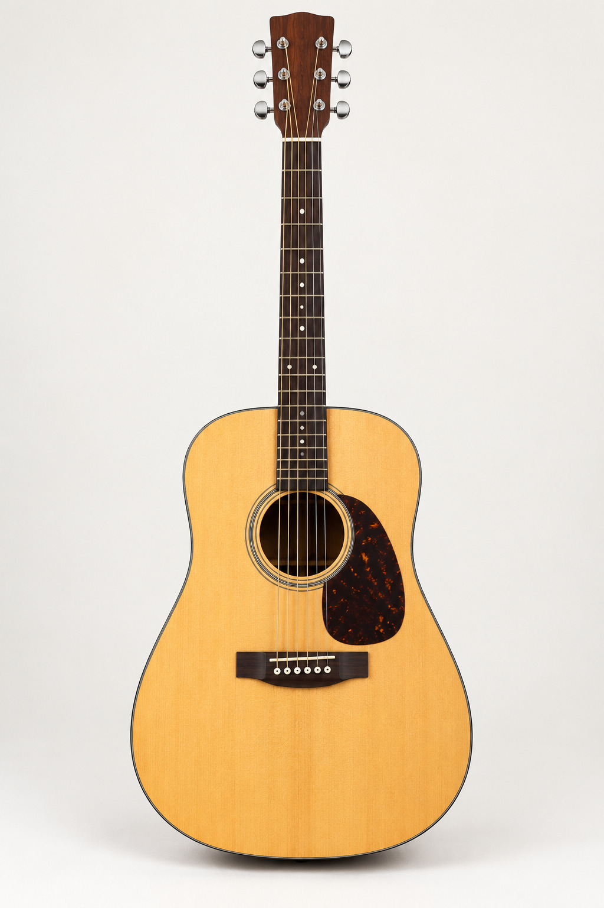
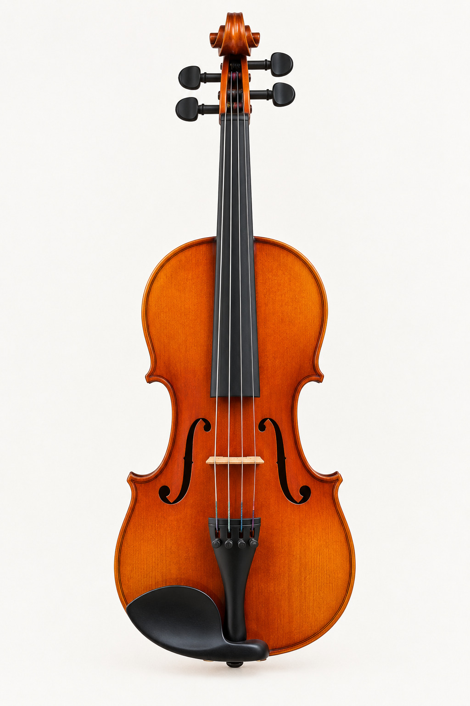

Private Lessons
We make learning music fun! We offer private lessons for piano, guitar, bass, and violin. Contact us today to schedule your first lesson for free!
We provide:
- Dedicated and Professional Instructors
- No Long-Term Contracts
- Flexible Schedule
- Two Performances a Year
- Summer Camps
Piano Lessons

We offer piano lessons for all ages, beginning at age three. Whether you are a beginner or have been playing piano for a while, we have a program to suit your needs. Learn new techniques, theory, harmony, and tone. Learning how to play the piano helps develop hand eye coordination and self-confidence.
Guitar Lessons

We offer guitar lessons for all ages, beginning at age five. Whether you are a beginner or have been playing guitar for a while, we have a program to suit your needs. Learn new techniques, theory, harmony, and tone. Learning how to play the guitar helps develop hand eye coordination and self-confidence.
Violin Lessons

We offer violin lessons for all ages, beginning at age six. Whether you are a beginner or have been playing violin for a while, we have a program to suit your needs. Learn new techniques, theory, harmony, and tone. Learning how to play the violin helps develop hand eye coordination and self-confidence.